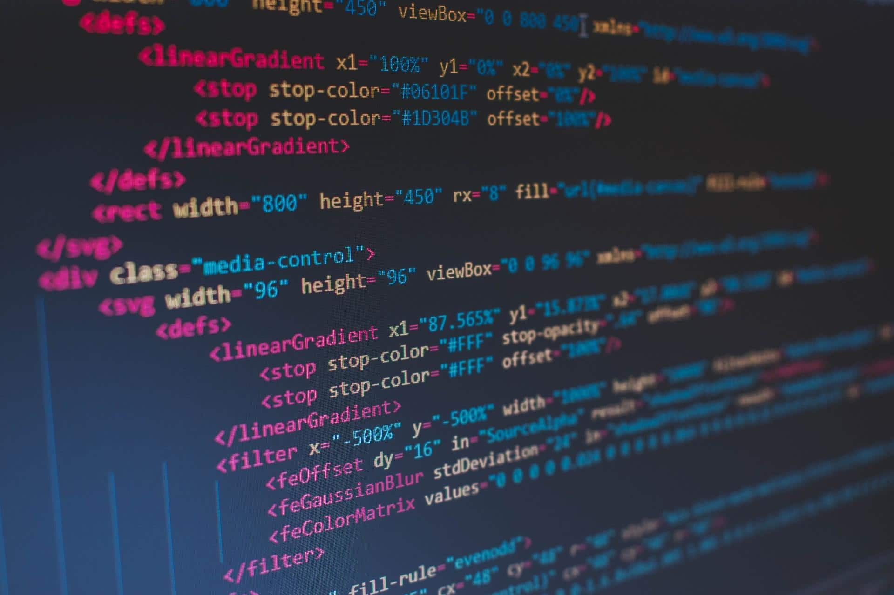

Program språk
Programspråk är ett formellt språk som en människa använder för att skapa datorprogram. Datorers grundspråk kallas maskinkod och består av ettor och nollor, som datorns centralprocessor direkt kan tolka. Eftersom programmering på den nivån är svår och tidskrävande, och lätt leder till fel, har man tagit fram olika sorters programspråk, där man använder kodord för att beskriva vad datorn skall göra och som tillåter att text, siffror och räkneoperationer skrivs in ungefär som i kommunikation mellan människor. Ett skilt datorprogram används sedan för att översätta denna mer läsbara kod till maskinkod.
Datorprogrammets källkod, som skrivits för hand, måste alltså i de flesta fall översättas till maskinkod innan programmet skall köras. För assembler görs översättningen med en assemblator. För högnivåspråk använder man en kompilator. Maskinkoden lagras sedan i en exekverbar binärfil. Vissa programspråk är inte avsedda att kompileras: ett interpreterat språk, tolkas under själva exekveringen. Det finns även språk som kan kompileras allteftersom programmet körs, med hjälp av en JIT-kompilator, och språk som kompileras till en snabbtolkad bytekod.
En del programspråk är konstruerade för att ganska noga följa datorernas typiska sätt att arbeta. Nyttan är framförallt att programmeraren då har bättre kontroll över den maskinkod som kommer att skapas då programmet kompileras. Sådana språk kallas för maskin- eller hårdvarunära språk eller lågnivåspråk, med assembler som typexemplet. Motsatsen är högnivåspråk. Den mesta källkoden skrivs med högnivåspråk. Man brukar även skilja mellan funktionella språk och objektorienterade språk. Ytterligare en uppdelning är mellan imperativa språk och deklarativa språk.
Ett programspråk, eller ett programmeringsspråk är ett språk som innehåller en rad regler i syfte att skapa olika typer av output. Vissa programspråk är skapade för att ganska exakt följa datorns typiska sätt att arbeta och nyttan med detta är främst att programmeraren i de fallen får bra kontroll över den maskinkod som kommer att skapas efter att programmet har kompilerats.
Högnivåspråk har visserligen en högre abstraktionsnivå än lågnivåspråk, men inom kategorin högnivåspråk finns ytterligare nivåer av abstraktion som skiljer olika språk åt. På den första nivån beskriver språket generellt hur något ska utföras, medan nästa abstraktionsnivå snarare beskriver vad det är som ska utföras. För att detta ska fungera behöver man ha ett begränsat problemområde så att kompilatorn som ska tolka koden kan använda definierade dellösningar som sätts ihop till en totallösning för det problem man vill lösa. Nackdelen med högnivåspråk är framförallt att programmeraren har svårare att kontrollera hur programmet ska uppföra sig i detalj. Det finns hur många programmeringsspråk som helst och flera tillkommer varje år, men vissa är betydligt mer utbredda än andra. Bland de mest populära nämns ofta språken Java, Python, Visual Basic, JavaScript, Ruby, Perl, Pascal, Swift och MATLAB.